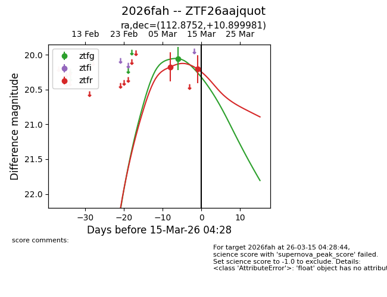
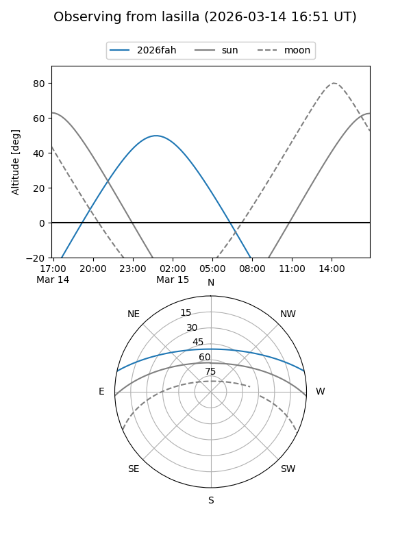
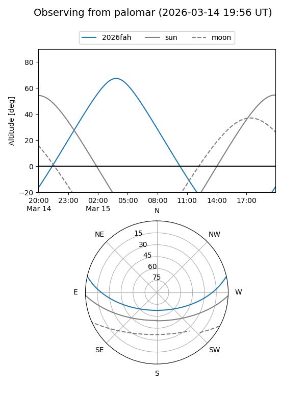
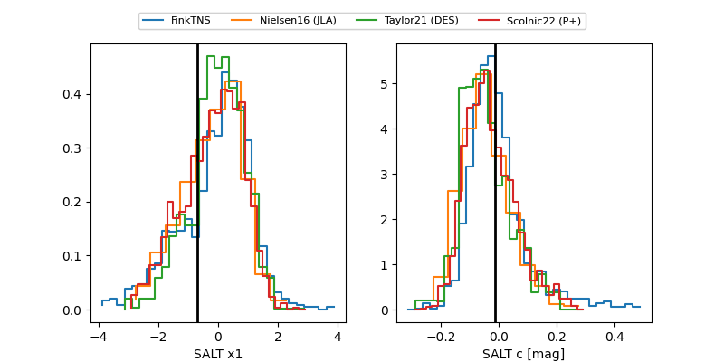

2026fah
Target 2026fah at 2026-03-15 04:30
Aliases and brokers:
FINK: link
Lasair: link
ALeRCE: link
TNS: link
YSE: link
alt names
ZTF26aajquot (ztf,fink_ztf)
2026fah (tns,yse)
Coordinates:
equatorial (ra, dec) = 112.8752,+10.89998
equatorial (HMS+DMS) = 07:31:30.04,+10:53:59.93
galactic (l, b) = (207.5900,+13.78130)
Flags:
Photometry:
last ztfg=20.05, ztfr=20.20
1 ztfg, 2 ztfr detections
Lightcurve

Visibility


Additional plots
